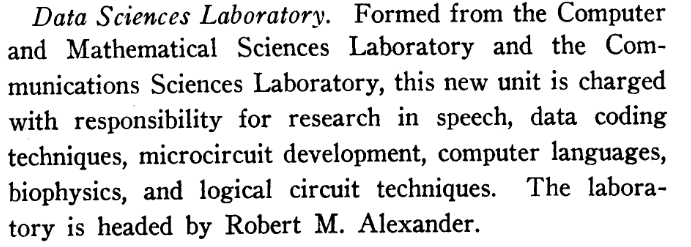

3 The 1960s
3.1 1963: The Data Sciences Lab
The first attested uses of “data science” and “data sciences” as recognizable collocations are found in the military-industrial sector of the early 1960s. The most significant of these is the Data Sciences Lab (DSL) of the Air Force Cambridge Research Laboratories (AFCRL).
Formed in 1963 out of …
The DSL was formed in 1963.1
In a series of reports covering the period from July 1962 to June 1970 on research carried out by the Data Sciences Laboratory (DSL). The DSL was founded in 1963 as one of several labs associated with the US Air Force Cambridge Research Laboratories (AFCRL).These reports do not provide an explicit definition of data science or a rationale for choosing the expression over others, but its meaning is clear from context.
Consider the stated motivation for the lab—which, as one of the first attested uses of the phrase, is worth quoting at length:
The most striking common factor in the advances of the major technologies during the past fifteen years [i.e. since WWII] is the increased use and exchange of information. Modern data processing and computing machinery, together with improved communications, has made it possible to ask for, collect, process and use astronomical amounts of detailed data. …
But in the face of this progress there is impatience with the limitations of existing machines. …
A large number of military systems—for example, those concerned with surveillance and warning, command and control, or weather prediction—deal in highly perishable information. Few existing computers are capable of handling this information in “real-time”—that is, processing the data as they come in. Higher speed is one way to a solution. But increased speed will not overcome fundamental shortcomings of existing computers. These shortcomings arise from the fact that existing machines, having essentially evolved as numerical calculators, are not always optimally organized to perform the tasks they are called upon to do. …
… A considerable amount of the data to be processed is not numerical. It is in audio or visual form. Immense amounts of visual data—for example, TIROS satellite pictures or bubble chamber pictures of atomic processes—remain unevaluated for lack of processing capability. In part this is due to the fact that, from the data processing point of view, the information content of pictorial inputs is highly redundant, demanding excessive channel capacity in transmission and compelling processing machinery to handle vast amounts of meaningless or non-essential information. Similar considerations prevail for speech. …
In real-life situations data are almost never available in unadulterated form, but are usually distorted or masked by spurious signals. Examples are seismic data, radio propagation measurements, radar and infrared surveillance data and bioelectric signals. …
An increasing amount of data processing research is aimed at the creation of machines or machine programs that incorporate features of deductive and inductive reasoning, learning, adaptation, hypothesis formation and recognition. Such features are commonly associated with human thought processes and, when incorporated in machines, are frequently termed “artificial intelligence.” Artificial intelligence is of utmost importance in decision situations where not all possible future events can be foreseen [AFCRL (1963); emphasis added].
The two later reports are more succinct:
The program of the Data Sciences Laboratory centers on the processing, transmission, display and use of information. Implicit in this program statement is an emphasis on computer technology (AFCRL 1967: 13).
Broadly defined, the program of the Data Sciences Laboratory involves the automatic processing, filtering, interpretation and transmission of information (AFCRL 1970: 318).
Based on these excerpts alone, one could be forgiven for inferring that data science was invented by the US Air Force around 1963 with the formation of the DSL. Most of the elements currently considered central to the field were brought together there: a concern for processing what is later called “big data,” clearly defined in terms of volume, velocity, and variety (and volatility); a recognition of the fundamental messiness of data; and a focus on artificial intelligence as an essential approach to extract value from such data. The lab produced significant research on pattern recognition and classification, machine learning, neural networks, and spoken language processing in the service of processing the novel forms of data described above.
3.1.1 Focus of DSL
(Reporter 1963) Telepathy study reported in the Guardian!
3.1.2 NEW: From HCI to DDP
Why the emphasis on visualization and human in the loop architectures?
Dynamic data processing.
And, why the emphasis on dynamic data processing?
A speech made by Licklider at a conference hosted by the Data Sciences Lab on speech and visual data holds a clue. He said: “... computer programming is the only known way of producing testable representations of very complex situations or processes” (Wathen-Dunn 1967 [1964]: 23).
This is in the context of a paper on dynamic modeling.
It is hard to overestimate the significance of this claim. To understand it, it is helpful to go back to the work of von Neumann and the Princeton computer that was used to simulate the atomic reaction of the first hydrogen bomb. [Find reference to von Neumann’s argument that statistics cannot be used in this context. And so is necessary to develop Monte Carlo methods.]
There is a genealogical connection between von oyman’s work and that of the data scientist lab. In any case, it is helpful to see here the role of the computer in this early iteration of data science. It is not simply a tool to make calculations more convenient, nor is it simply an environment that could in principle be replaced by pencil and paper. It is the very condition of possibility of extracting meaning from certain kinds of data. This is a very important idea and we’ll come back to it.
Go on to show the connection between dynamic modeling and exploratory data analysis on the one hand, that is, interactive pattern recognition, and data mining on the other.
3.1.3 Context
More important than locating a precise time and place for the origin of the field—a task doomed to fail, given the complexity and multithreaded nature of historical phenomena—is the work of describing the historical situation within which the phrase data science developed and which it indexes. A clue to this context is the repeated emphasis on data and information processing we find in the DSL’s descriptions of its work. Specifically, the phrases “the data processing point of view” and “data processing research” index a set of military projects and concerns associated with the early Cold War.
The AFCRL was originally established in 1945 as the Cambridge Field Station, a unit created to hold onto the Harvard and MIT scientists and engineers who performed significant research on radar and electronics in WWII. The lab became “highly specialized in radar, digital communications for radar, geophysics, and weather analysis systems” and “quickly established itself as a premier research facility, especially to William Golden, President Truman’s special consultant on how the country should most effectively mobilize its scientific resources” (Green 2010: 101).
During the 1950s, the lab focused on Project Lincoln, which led to the creation of the Semi-Automatic Ground Environment (SAGE), a real-time command-and-control system developed to counter to perceived threat of an airborne nuclear attack by the Soviet Union. As a continental air defense system, SAGE was designed to collect, analyze, and relay data from a vast array of geographically distributed radars in real-time, in order to initiate an effective response to an aerial attack. At the heart of the system was a network of large digital computers that coordinated the data retrieved from the radar sites over phone lines and processed them to produce a single unified image—literally displayed on a monitor—of the airspace over a wide area.
Two units involved in SAGE become the DSL

(Venkateswaran 1963: 624)
The DSL was formed by combining the Computer and Mathematical Sciences Laboratory and the Communications Sciences Laboratory in the 1963 reorganization of the AFCRL (Venkateswaran 1963: 628). Within the AFCRL, the lab was noted for its “research on speech patterns [which] dated back to the 1940’s [sic]” (Altshuler 2013: 27-28).
The DSL generalizes the research
DX-1
Dynamic Data Processing
Although responsibility for research on such military surveillance systems was moved out of the lab in 1961, just before the Data Sciences Lab was formed, it is plausible that the SAGE project influenced the mission of the lab by providing a concrete paradigm for a new kind of information processing situation. This was the situation of using of advanced computational machinery and state-of-the-art data reduction and pattern recognizing methods to process vast amounts of real-time signal data, coming from geographically distributed radars and satellites, in order to represent a complex space of operations and guide making decisions about how to operate in that space. The paradigm was also applied to the problem of weather forecasting and other geophysical domains. (If we replace radars with smart phones and the Internet of Things, it is not difficult to draw a parallel between this arrangement and that of social media corporations today.)
3.1.4 Language
Evidence for the influence of radar and satellite-based real-time command and control systems on the conceptualization of data science may be found in the idioms we currently associate with the field, such as the use of “signal and noise” to refer to the presence and absence of statistically significant patterns and the use of Receiver Operator Characteristic (ROC) curves—first used by military radar operators in 1941—to measure the performance of binary classifiers. Other idioms, such as “data deluge,” also emerge in this context.
3.1.4.1 Data deluge and NASA
A history of the expression data deluge is worth its own study, but it is clear that its provenance was the situation described above. The term gained currency in the 1960s in reference to satellite data collected by NASA and the military. Consider this passage from the NASA publication Scientific Satellites:
The data deluge, information flood, or whatever you choose to call it, is hard to measure in common terms. An Observatory-class satellite may spew out more than 1011 data words during its lifetime, the equivalent of several hundred thousand books. Data-rate projections, summed for all scientific satellites, prophesy hundreds of millions of words per day descending on Earth-based data processing centers. These data must be translated to a common language, or at least a language widely understood by computers (viz, PCM), then edited, cataloged, indexed, archived, and made available to the scientific community upon demand. Obviously, the vaunted information explosion is not only confined to technical reports alone, but also to the data from which they are written. In fact, the quantity of raw data generally exceeds the length of the resulting paper by many orders of magnitude (Corliss 1967: 157).2
Work on such projects generated an enormous amount of research on the problems arising from the processing and interpreting data. In the preceding text, the author describes this work in some detail, specifying a series of stages in which data are transformed into a form suitable for scientific analysis. We would recognize this work today as data wrangling. It is reasonable to infer that the concept of data science emerged to designate this kind of work, which, in any case, is consistent with the published mission of the Data Sciences Lab.
3.1.5 Data processing scientist
Prior to the formation of the DSL, the phrase “data-processing scientist” was in use to designate the work involved in data reduction centers, such as the one built at the Langley Aeronautical Lab in Virginia to process the enormous amounts of data generated by wind tunnel experiments and other sources associated with the nascent space program. Data reduction was essential to projects like SAGE, in which vast amounts of real-time signal data had to be reduced prior to analysis. In a House appropriations hearing in 1958, the following description of this kind of work was provided by Dr. James H. Doolittle,3 the last chairman of NACA before it became NASA:
The data processing function is much more complex than the mere production line job of translating raw data into usable form. Each new research project must be reviewed to determine how the data will be obtained, what type and volume of calculations are required, and what modifications must be made to the recording instruments and data-processing apparatus to meet the requirements. It may even be necessary for the data-processing scientist to design and construct new equipment for a new type of problem. Some projects cannot be undertaken until the specific means of obtaining and handling the data have been worked out. In some research areas, on-line service to a data processing center saves considerable time by allowing the project engineer to obtain a spot check on the computed results while the facility is in operation. This permits him to make an immediate change in the test conditions to obtain the results that he wants [Appropriations (1958); emphases added].
3.2 Data Impedance
The kind of work conducted by NASA and the Air Force in this period provides a context for understanding the meaning of data science when the phrase first appeared. In this context, data science designated a kind of research focused on what we may call the impedance that arises from the ever-growing requirements of data produced by an expanding array of signal generating technologies (e.g. radars and satellites), scientific instruments, and reports on one hand, and the limited capacity of computational machinery to process these on the other. It is concerned specifically with the development of computational methods and tools to handle the problems and harness the opportunities posed by surplus data. In this context, data science is the science of processing and extracting value from data by means of computation. Although the specific technologies have changed continually, the condition of data impedance, the disproportion between data abundance and computational scarcity relative to the need to extract value from the data, has been constant since this time, and defines the condition that gives rise to data science in this sense.
3.2.1 Data Science Task Group
This interpretation of the meaning of data science is corroborated by other contemporary usages. A report on a US Department of Defense program to define standards “to interchange data among independent data systems” refers to a “Data Science Task Group” established in 1966 “to formulate views of data and definitions of data terms that would meet the needs of the program” (Crawford, Jr. 1974: 51). Crawford, a fellow student of Claude Shannon at MIT under Vannevar Bush, was affiliated with IBM’s Advanced Systems Development Division, a group that had developed optical scanners to recognize handwritten numbers in 1964.
3.2.2 Corporations
In addition, the term appeared in the trademarked name of at least two corporations in the United States: Data Science Corporation, formed in 1962 by a former IBM employee (“Robert Allen Obituary (2014) - St. Louis, MO - St. Louis Post-Dispatch,” n.d.), and Mohawk Data Sciences, founded in 1964 by a three former UNIVAC engineers (“Mohawk Data Sciences” 1966).4 Both companies provided data processing services and lasted well into the era of personal computing. In the late 1960s and 1970s, many other companies used term as well, such as Data Science Ventures (Mort Collins Ventures, n.d.) and Carroll Data Science Corporation (Office 1979).5
3.3 Meaning of “Data”
Let us consider the meaning and significance of the word “data” in these examples, especially given the DOD’s concern to define it, as a clue for the motivation of the term “data science” when other candidates, such as computer science and information science, might have sufficed at the time. The choice of the term appears to be motivated by a concern to define and understand data itself as an object of study, a surprisingly opaque concept that is thrown into sharp relief in the context of getting computers to do the hard work of processing information in the context of impedance, as a result of their commercialization and widespread use in science, industry, and government. Thus although the term “data” has a long history—deriving from the Latin word for that which is given in the epistemological sense, either through the senses, reason, or authority—in this context it refers to the structured and discrete representation of information sources so that these may be processed by computers. In other words, data is machine readable information.6 It follows that the data sciences in this period are concerned with understanding machine readable information, in terms of how to represent it and how to process it in order to extract value.
3.4 Classical Data Science
3.4.1 CODATA
Further evidence of this concern for what might be called the information crisis in scientific research—and for the idea that the solution to this crisis hinges on refining the concept of data—can be found in the formation of the International Council for Science (ICSU) Committee on Data for Science and Technology (CODATA) in 1966. This organization was established by an international group of physicists alarmed that the “deluge of data was swamping the traditional publication and retrieval mechanisms,” and that this posed “a danger that much of it would be lost to future generations” (Lide and Wood 2012: 1). Importantly, CODATA still exists and currently identifies itself with the field of data science. In 2002 it launched the Data Science Journal, focused on “the management, dissemination, use and reuse of research data and databases across all research domains, including science, technology, the humanities and the arts” (“Data Science Journal,” n.d.). Aware that the definition of the field had changed significantly since its founding, the journal provided the following clarification in 2014:
We primarily want to specify our definition of “data science” as the classic sense of the science of data practices that advance human understanding and knowledge—the evidence-based study of the socio-technical developments and transformations that affect science policy; the conduct and methods of research; and the data systems, standards, and infrastructure that are integral to research.
We recognize the contemporary emphasis on data science, which is more concerned with data analytics, statistics, and inference. We embrace this new definition but seek papers that focus specifically on the data concerns of an application in analytics, machine learning, cybersecurity or what have you. We continue to seek papers addressing data stewardship, representation, re-use, policy, education etc.
Most importantly, we seek broad lessons on the science of data. Contributors should generalize the significance of their contribution and demonstrate how their work has wide significance or application beyond their core study [Parsons (2019); emphasis in original].
This retrospective definition supports the idea that data science in the 1960s—which we may call, following this note, classical data science—was concerned with understanding data practices, where data is understood to be a universal medium into which information in a variety of native forms, from scientific essays to radio signals from outer space, must be encoded so that it may be shared and processed by computational machinery. Data science as “the science of data practices that advance human understanding and knowledge” is concerned with defining and inventing this medium, its structure and function.
3.5 A Note on Tukey
Tukey’s famous essay on data analysis, which appears during the same time period, touches on some of the drivers noted here, such as the high volume and spottiness of real data and the impact of the computer, but from the perspective of advanced mathematical statistics (Tukey 1962). One difference between his view and that adopted by the AFCRL is of interest here: whereas Tukey appears to have regarded the computer as a more or less fixed technology, replaceable in many tasks by “pen, paper, and slide rule” but irreplaceable (he conceded) in others, the Data Sciences Lab viewed the computer as a fluid technology, one that needed to be pushed beyond its original design envelope as a numerical calculator. In fact, the AFCRL and similar groups appear to have provided the impetus to move computer science beyond a concern for abstract algorithms and to include the study of data structures and technologies, specifically databases. It is, as we shall see, a difference that continues to underlie current disputes over the meaning and value of data science.
The DSL was formed by combining the Computer and Mathematical Sciences Laboratory and the Communications Sciences Laboratory in the 1963 reorganization of the AFCRL (Venkateswaran 1963: 628). Within the AFCRL, the lab was noted for its “research on speech patterns [which] dated back to the 1940’s [sic]” (Altshuler 2013: 27-28).↩︎
Preceding the usage of data deluge and in a wider context is “information explosion.” Both expressions conjure images of disaster and have been remarkably persistent up to the present era. Only with the coining of “big data” have they been displaced by a more positive term.↩︎
This is the very same General Doolittle of Doolittle’s Raid.↩︎
There is a reference to a Data Sciences Corporation of San Diego, Califorrnia in a listing found in the journal Data Systems Engineering in 1963 (Data Systems Engineering 1963). The same organization appeared in a series of Military Prime Contract Files dating from 1967 to 1974 (“NARA - AAD - Display Full Records - Military Prime Contract File, 7/1/1966 - 6/30/1967” 1967; “NARA - AAD - Display Full Records - Military Prime Contract File, 7/1/1973 - 6/30/1974” 1974). Not much can be discerned about the company from the documentary evidence other than that the company contracted to the Army to provide various forms of electronic communication equipment.↩︎
This continues into the 1980s, with Gateway Data Sciences Corp and Vertex Data Science, Ltd.↩︎
Preceding the usage of data deluge and in a wider context is “information explosion.” Both expressions conjure images of disaster and have been remarkably persistent up to the present era. Only with the coining of “big data” have they been displaced by a more positive term.↩︎